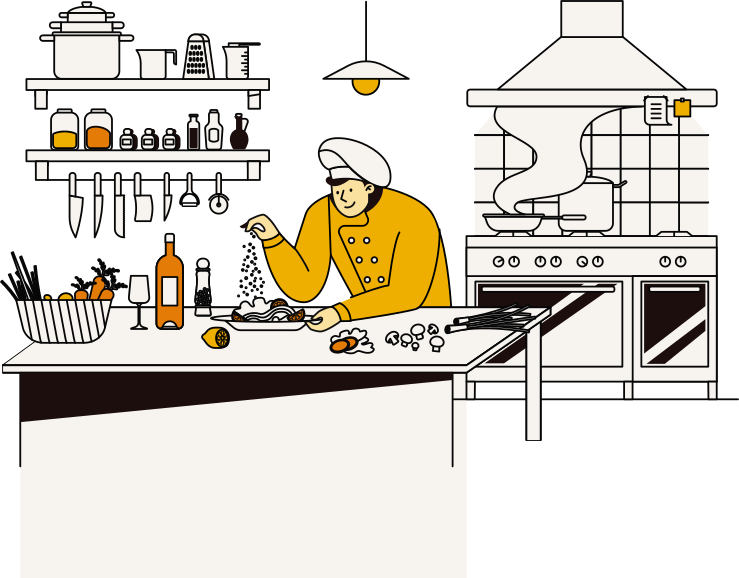
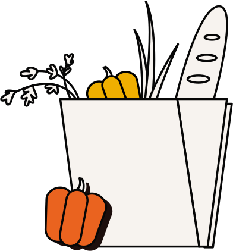
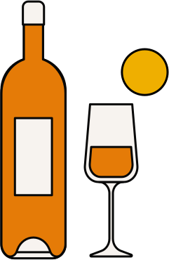
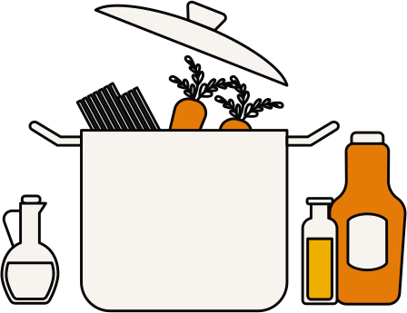

Mayan Kitchen

Our kitchen uses the best ingredients found locally in the area. We guarantee the highest quality.
Our amazing chefs specialize in fine dining, deserts, and providing exquisite drinks
We offer the best solution to your large meal needs. Call one week ahead and let us put a smile on your groups face.
Mayan Kitchen Drive Chattanooga, TN 37421